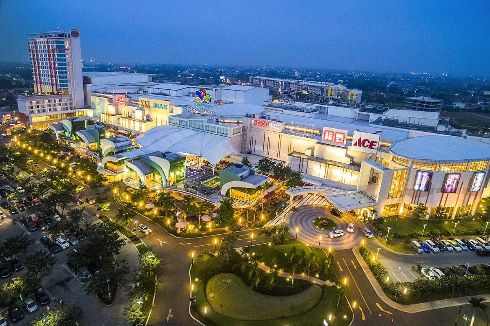
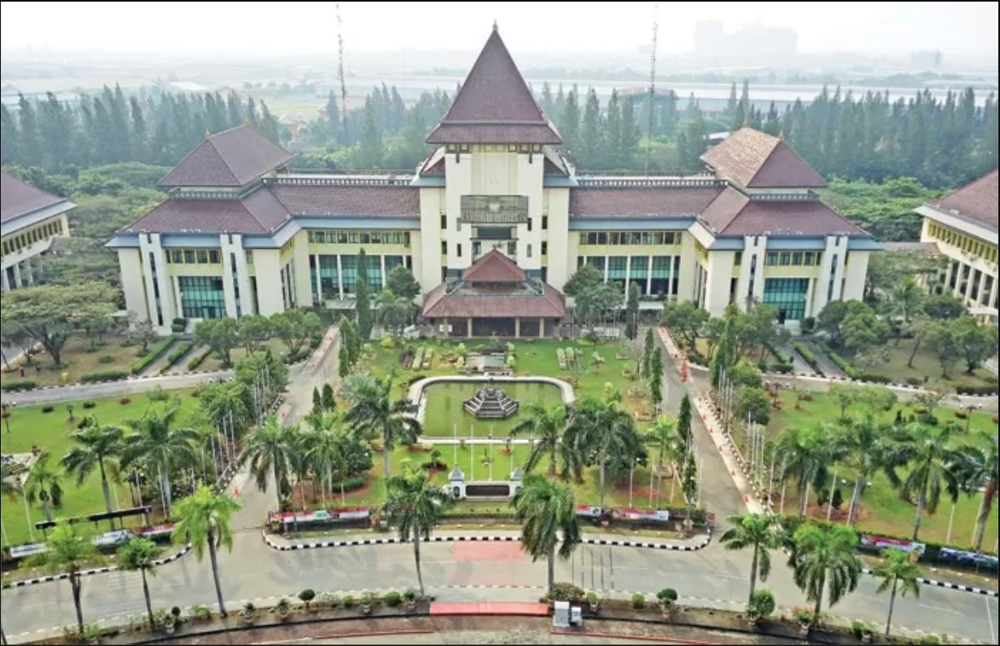
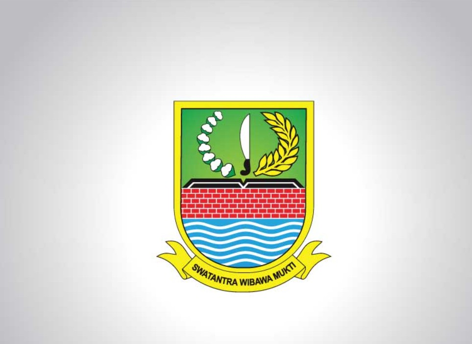
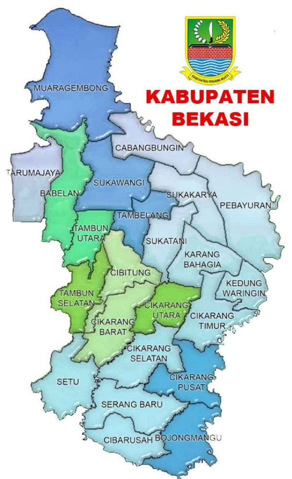
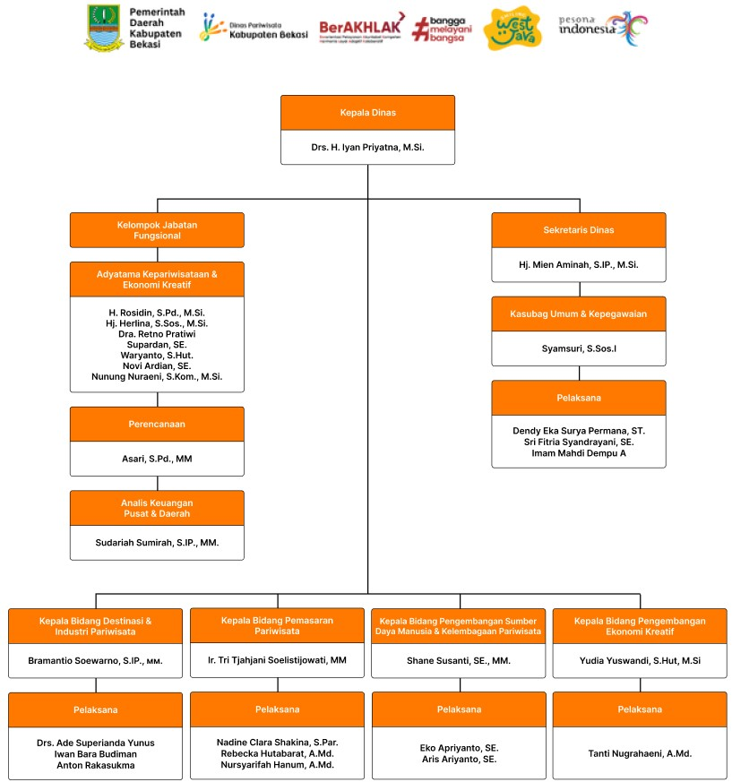

Kabupaten Bekasi
Sejarah Mengenai Dinas Pariwisata Kabupaten Bekasi


Kabupaten Bekasi secara administratif dikepalai oleh seorang Bupati. Wilayah ini terbagi dalam 23 kecamatan yang berbatasan dengan Laut Jawa di bagian utara, Kabupaten Bogor di bagian selatan, Jakarta Utara dan Kota Bekasi di bagian barat serta Kabupaten Karawang di bagian timur.
Menurut Poerbatjaraka, kata “Bekasi” berasal dari kata Chandrabhaga, sebuah sungai yang disebut dalam Prasasti Tugu. Dalam perkembangan bahasa, Chandrabhaga berubah menjadi Bhagasasi hingga akhirnya menjadi Bekasi.
Berdasarkan Peraturan Daerah Kota Bekasi Nomor 07 Tahun 2016, terbentuk Dinas Pariwisata dan Kebudayaan yang bertugas mengelola serta mengembangkan potensi wisata Kabupaten Bekasi agar dikenal luas oleh masyarakat.
Visi Misi Dinas Pariwisata Kabupaten Bekasi
Terwujudnya Pariwisata Yang Kreatif dan Ramah Lingkungan



Struktur Organisasi Dinas Pariwisata Kabupaten Bekasi
